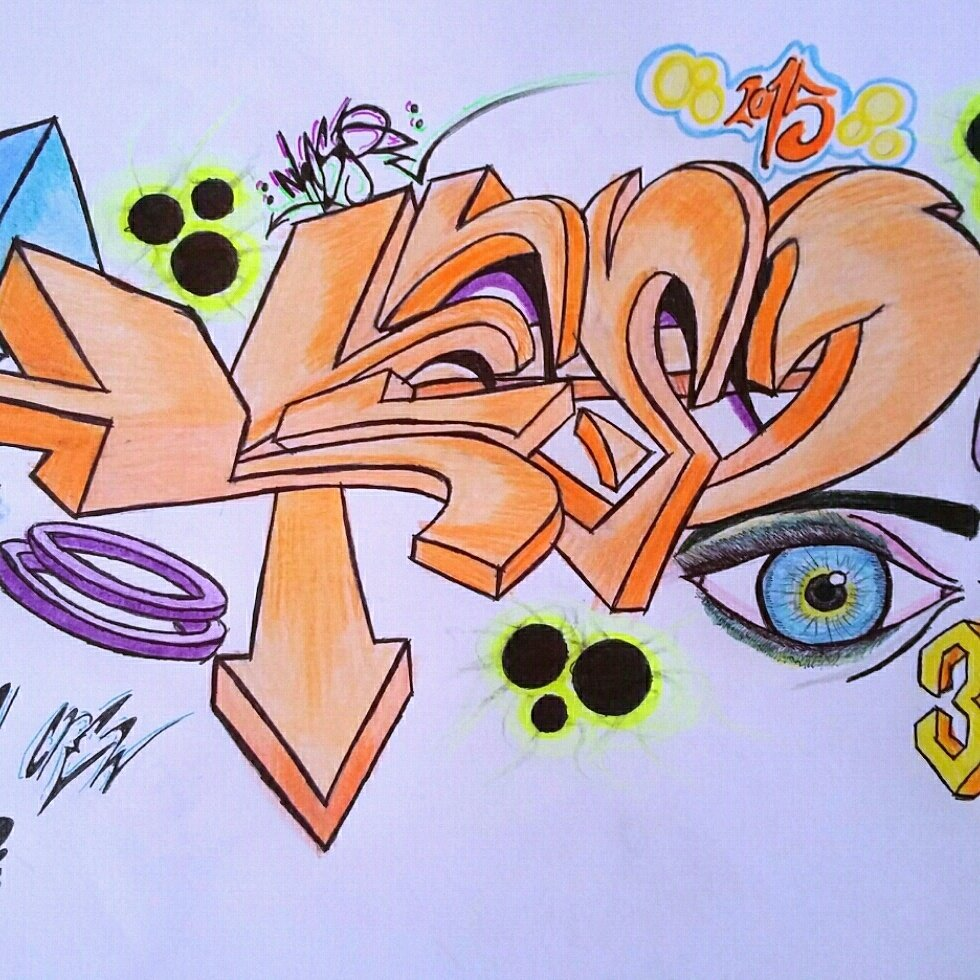
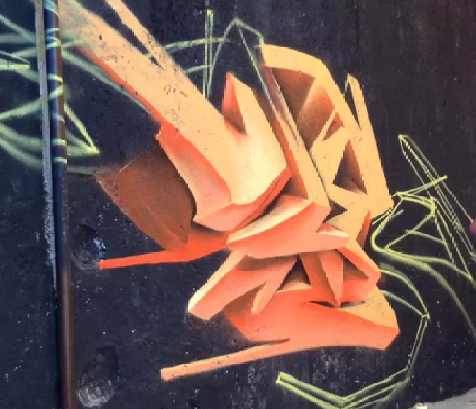

EL GRAFFITI
El graffiti en un tipo de ARTE urbano donde se plasman temas del cual representan un dibujo en relación a la fecha en el cual se esté tambien se puede pintar la placa o crew (grupo al cual pertenece el graffitero). Un graffiti siempre tiene que mostrarse muy colorido para poder llamar la atención del espectador o con un tema muy UNDERGROUND que se refiere diseno muy llamativo.
En el graffiti se dan dos tipos de pinta que son las legal y la ilegal: La pinta o graffiti legal se hace en paredes con permiso de las autoridades o del responsable a quien pertenesca el muro que se valla a pintar. Los estilos que de dan en el graffiti legal son el wild y el mural pero tambien esxiste el "BODY PAINT" que no consiste en pintar una pared sino como su nombre lo dice pintar el cuerpo de alguien que ya lo allá autorizado.
En el graffiti o pinta ilegal se hacen las bombas y tagges que son para que el graffitero se de a conocer a él y a su crew al que pertence. Esta pinta tiene sus consecuencias las cuales son que la sociedad tome a el graffiti como un vandalismo y no un arte, también tiene la concecuencia de que el graffitero sea atrapado por las autoridades y sea obligado a pagar una fianza costosa y a reparar los danos causados por la pinta que allá ejecutado haciendo un servicio a la comunidad despintando los graffitis que ya otros han echo.
Un graffitero siempre tiene un sobrenombre o placa con el cual es nombrado y comúnmente ésta a un crew (grupo en el cual pertenece). Las placas de los graffiteros generalmente son un poco extranas sin ningún significado, el crew si tiene un significado ya sea el que sus integrantes le hallan querido dar representado siempre con 3 siglas como por ejemplo algunos crews conocidos en comunidad de Atlixco son la ANG (Alterando Nuestro Génesis), MNR (Mafia Negra Records), JHF (Just Havin Fun) y la 11 (Arte Abismal)
HECTOR PONCE VELIZ Y EDGAR VALLE VILLEGAS
HISTORIA
A finales de los sesenta los adolescentes en la ciudad de Nueva York empezaron a escribir sus nombres en las paredes de sus barrios, aunque en realidad utilizaban pseudónimos, creandose así una identidad propia en la calle. Estos chicos escribían para sus amigos o incluso para sus enemigos. Quizás el ejemplo más significativo y a la vez el más conocido por todos sea el de Taki 183, un chico de origen griego que a la edad de 17 anos comenzó a poner su apodo. Su verdadero nombre era Demetrius (de ahí el diminutivo “Taki”) y 183 era la calle donde vivía (poner el nombre de la calle fue un elemento usado por muchos más escritores). Taki trabajaba como mensajero y viajaba constantemente en el metro de un lado a otro de la ciudad. En el trayecto estampaba su tag (firma) en todos los lados, dentro y fuera del vagón. El no lo consideraba como algo malo, de hecho respondía así a las preguntas que le formularon en una entrevista en el New York Times: “Simplemente es algo que tengo que hacer. Trabajo, pago mis impuestos y no hago dano a nadie”. Estos actos le convirtieron en un héroe y poco después cientos de jóvenes empezaron a imitarle.

EXPRESION SIN LIMITES
CARACTERISTICAS DEL GRAFFITI
En el lenguaje común, el grafiti es el resultado de pintar textos abstractos en las paredes de manera libre, creativa e ilimitada con fines de expresión y divulgación donde su esencia es cambiar y evolucionar buscando ser un atractivo visual y con un alto impacto, como parte de un movimiento urbano revolucionario y rebelde siendo una de las cuatro partes de las ramas del hip hop.
Además, se cataloga como uno de los nueve elementos básicos de la cultura hip hop.
EXPRESION SIN LIMITES
CARACTERISTICAS DEL GRAFFITERO
Un graffitero siempre tiene un sobrenombre o placa con el cual es nombrado y comúnmente ésta a un crew (grupo en el cual pertenece). Las placas de los graffiteros generalmente son un poco extranas sin ningún significado, el crew si tiene un significado ya sea el que sus integrantes le hallan querido dar representado siempre con 3 siglas como por ejemplo algunos crews conocidos en comunidad de Atlixco son la ANG (Alterando Nuestro Génesis), MNR (Mafia Negra Records), JHF (Just Havin Fun) y la 11 (Arte Abismal)
EXPRESION SIN LIMITES
WILD
Estilo de graffiti donde cada una de las letras se disenan con muchas flechas o terminando en punta y dándole un efecto en 3D visualizandolo como un tema "alocado" de ahí su nombre WILD (SALVAJE).
EXPRESION SIN LIMITES
BODY PAINT
Estilo de graffiti donde se hace el nombre de la víctima (persona a la quien le están pintando) o la placa del graffitero (sobrenombre con el que se hace mencionar el graffitero) ,ya sea en un brazo, pierna, abdomen o en la espalda.
EXPRESION SIN LIMITES
PIEZA
. Estilo de graffiti donde el diseno de la pinta es una figura distorsionada con efectos en 3D.

EXPRESION SIN LIMITES
MURAL
Estilo de graffiti donde se plasma las placa del graffitero (sobrenombre con el que se hace mencionar el graffitero) o un tema dependiendo las fechas en las que se encuentre o un dibujo ya sea con o ningún mensaje en específico.

EXPRESION SIN LIMITES
BOMBA Y TAGG
BOMBA. Estilo de graffiti donde las letras se inflan pero con un diseno poco común, normalmente este estilo se usa para para aplicarlo en las paredes ilegalmente para que el graffitero se de a conocer, este estilo no tiene colores llamativos ni temas en común sólo son para que la placa o crew del graffitero se alze.
TAGG. Estilo de graffiti donde las letras son como un tipo firma pero con la placa del graffitero o del crew al que pertenecen, este estilo tampoco tiene colores o temas en específico sólo es para que el causante o grupo del graffitero se de a conocer y crearse una "fama".
EXPRESION SIN LIMITES
GRAFFITI LEGAL
La pinta o graffiti legal se hace en paredes con permiso de las autoridades o del responsable a quien pertenesca el muro que se valla a pintar. Los estilos que de dan en el graffiti legal son el wild y el mural pero tambien esxiste el "BODY PAINT" que no consiste en pintar una pared sino como su nombre lo dice pintar el cuerpo de alguien que ya lo allá autorizado.
EXPRESION SIN LIMITES
GRAFFITI ILEGAL
En el graffiti o pinta ilegal se hacen las bombas y tagges que son para que el graffitero se de a conocer a él y a su crew al que pertence. Esta pinta tiene sus consecuencias las cuales son que la sociedad tome a el graffiti como un vandalismo y no un arte, también tiene la concecuencia de que el graffitero sea atrapado por las autoridades y sea obligado a pagar una fianza costosa y a reparar los danos causados por la pinta que allá ejecutado haciendo un servicio a la comunidad despintando los graffitis que ya otros han hecho.
EXPRESION SIN LIMITES